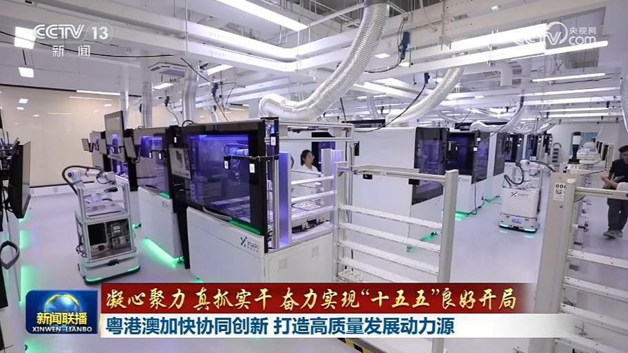
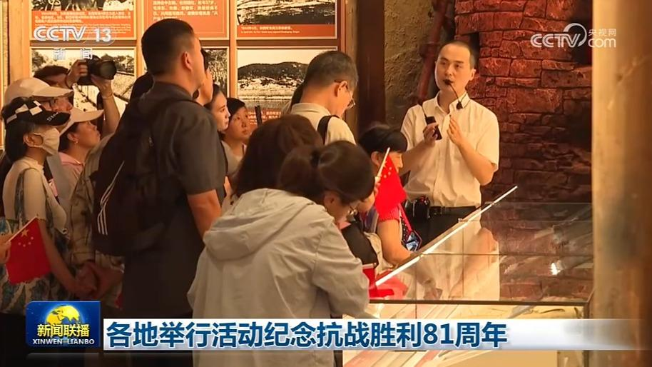
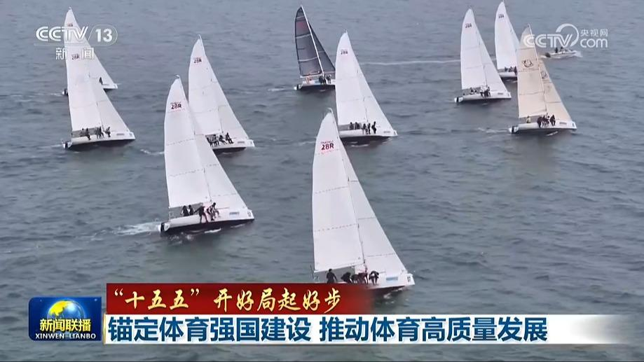
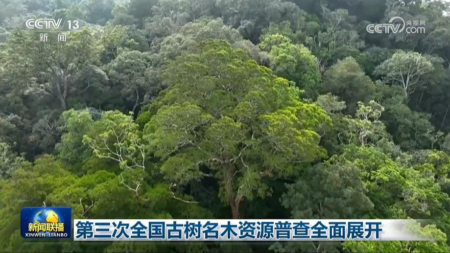
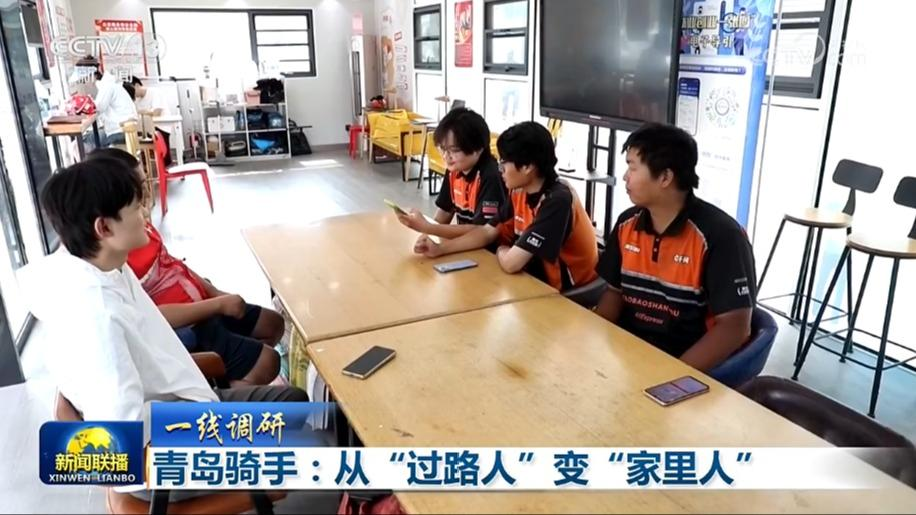
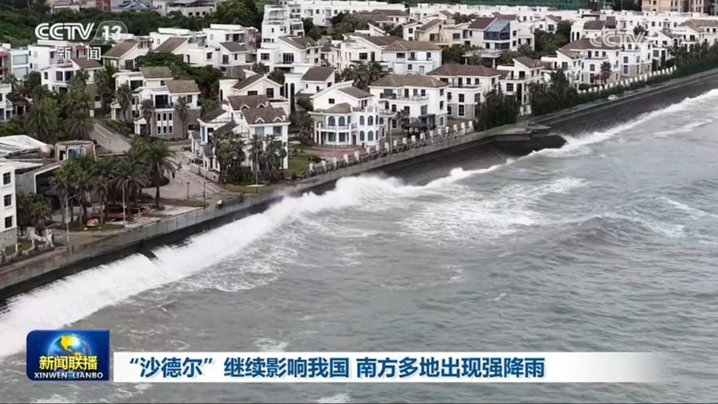
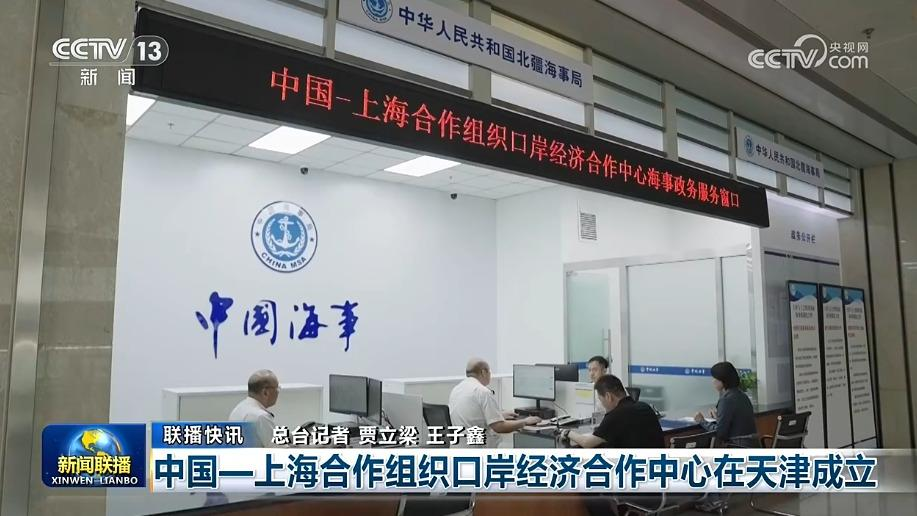
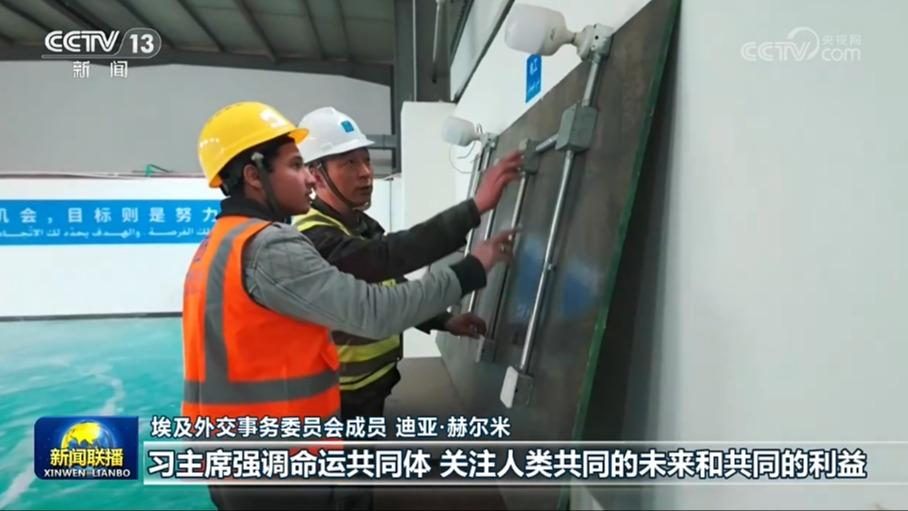
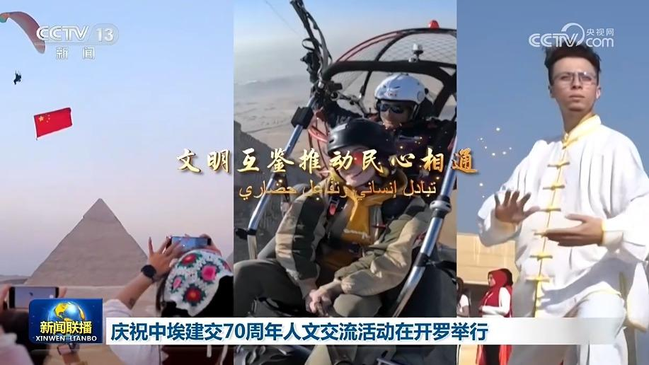
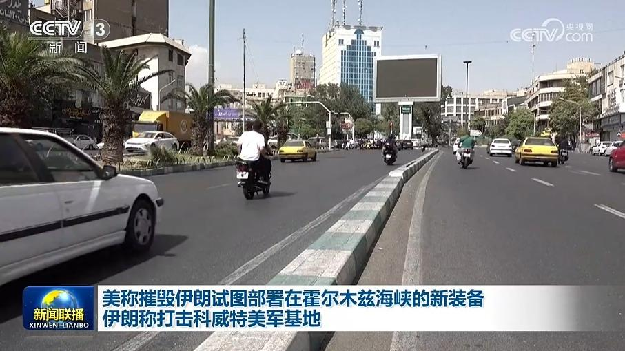

01
习近平和彭丽媛同埃及总统塞西夫妇共同参观大埃及博物馆
当地时间9月2日下午，国家主席习近平和夫人彭丽媛在埃及总统塞西和夫人依缇萨尔陪同下参观大埃及博物馆。

当地时间9月2日下午，国家主席习近平和夫人彭丽媛在埃及总统塞西和夫人依缇萨尔陪同下参观大埃及博物馆。
当地时间9月2日晚，国家主席习近平结束对埃及的国事访问。离开开罗时，埃及总统塞西夫妇到机场送行。
9月3日上午，国家主席习近平圆满结束出席2026年上海合作组织峰会和对吉尔吉斯斯坦、埃及的国事访问后回到北京。

“十五五”规划纲要提出，深化粤港澳合作，持续推动重点领域合作实现突破。“十五五”开局之年，广东以制度创新打通要素流动堵点，强化粤港澳三地协同攻关，奋力把粤港澳大湾区打造为全球科技创新高地和新兴产业重要策源地。
纪念中国人民抗日战争暨世界反法西斯战争胜利81周年座谈会3日在北京举行，中共中央政治局委员、中宣部部长李书磊出席。

全国各地举行活动纪念中国人民抗日战争暨世界反法西斯战争胜利81周年。传承和弘扬伟大抗战精神，为强国建设、民族复兴汇聚奋进力量。

国务院新闻办公室今天（9月3日）举行“开局起步‘十五五’”系列主题新闻发布会。国家体育总局相关负责人介绍“十五五”时期体育强国建设有关情况。

古树名木是十分重要的物种资源、景观资源和历史人文资源，记者从全国绿化委员会办公室了解到，目前，第三次全国古树名木资源普查全面展开。

在青岛，5万多名网约配送骑手是城市运转不可或缺的力量，但他们也长期面临“进门难、安居难、保障难”的现实困境。难题如何破解？带着疑问，记者走进青岛，探寻这座城市正在进行的创新实践。

台风“沙德尔”今天（9月3日）早晨在福建漳州漳浦古雷沿海登陆，这是“沙德尔”第三次登陆我国。

第六次中国城乡老年人生活状况抽样调查启动

多国人士表示，习近平主席对埃及的国事访问推动埃中全面战略伙伴关系迈向新高度，也为缓解地区紧张局势、实现世界和平与发展注入更多确定性与正能量。

在中国国家主席习近平对埃及进行国事访问之际，当地时间9月1日，中国中央广播电视总台与埃及新闻国务部联合主办的庆祝中埃建交70周年人文交流活动在开罗举行。埃及总统塞西发来贺信，对活动举办表示祝贺。

美国总统特朗普2日称，美军此前一天对伊朗的袭击摧毁了伊朗“试图在霍尔木兹海峡沿岸部署的所有新装备”，美国随时准备再次发动打击。
巴勒斯坦指责以色列扩大占领